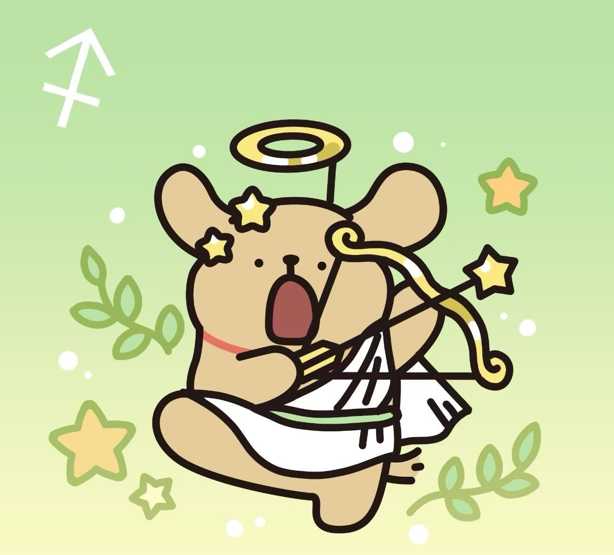
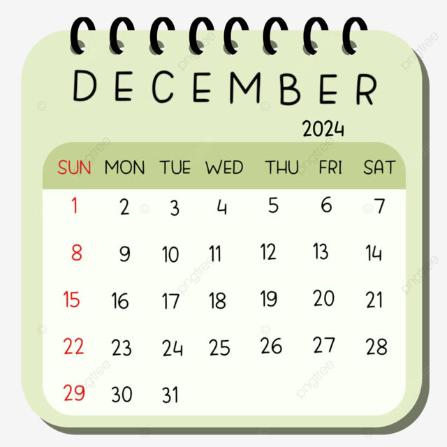
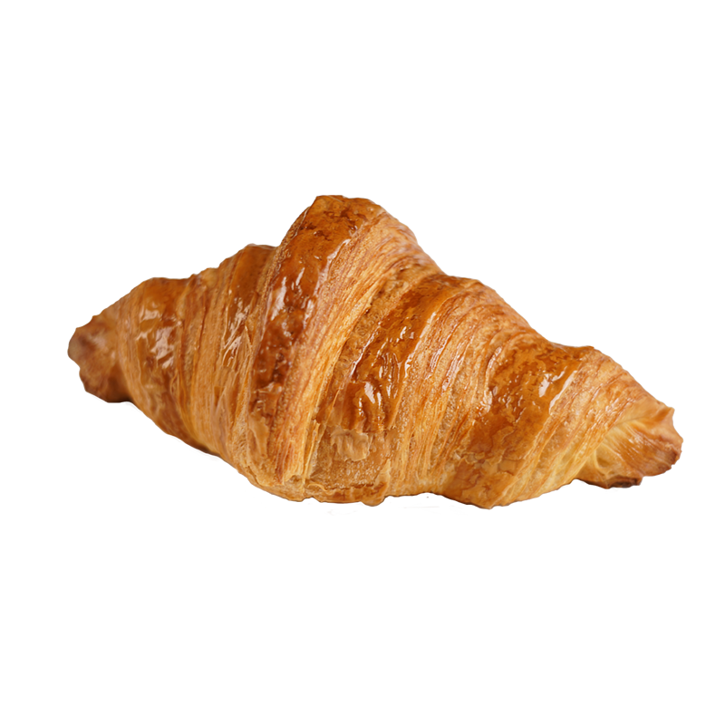
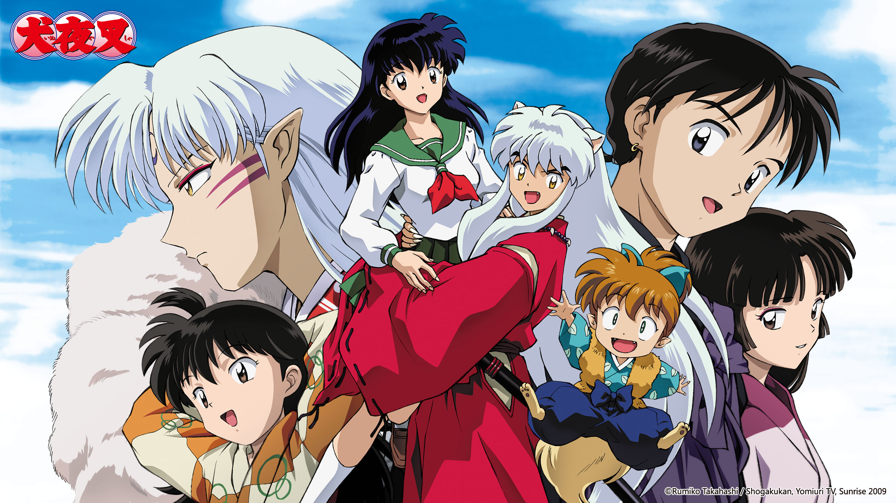
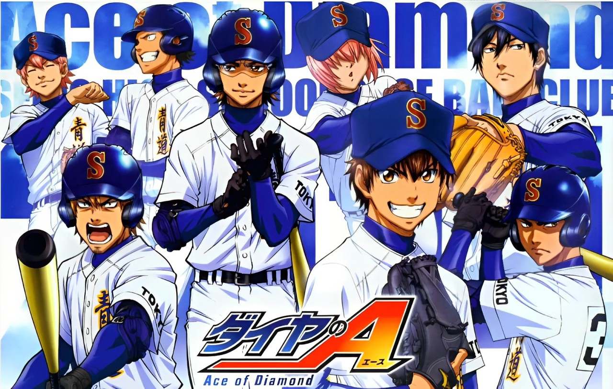
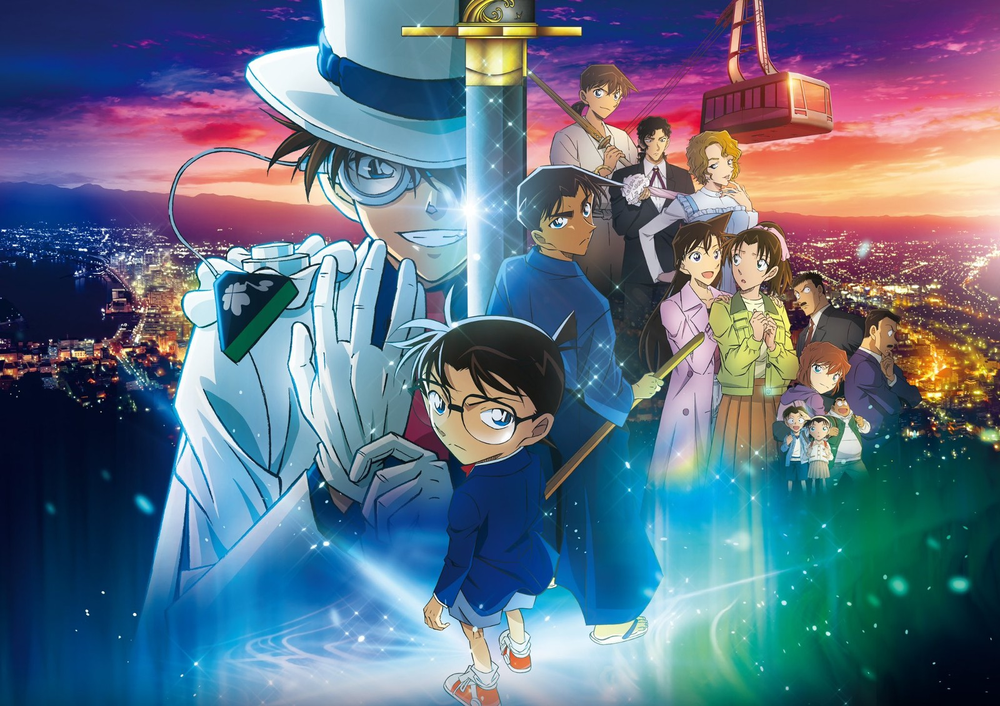
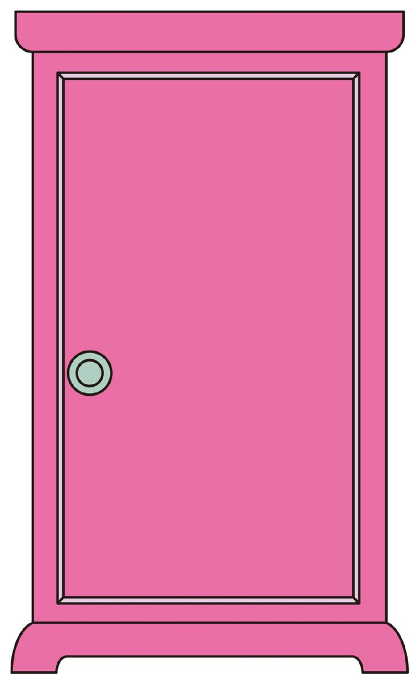

選擇測試日期:
Teacher Avery 生日倒數計時器
天
00
時
00
分
00
秒
00
沒用按鈕次數:
0
 

關卡 1
常駐開啟!
關卡 2
還剩
3
天 開啟
關卡限時開放中!
關卡 3
還剩
5
天 開啟
關卡限時開放中!
今天的提示字是:
Re
。
今天的提示字是:
la
。
關卡 1 -音樂
消消樂
分數:
0
音量:
重新洗牌
確認
關卡 2 - 問答遊戲
第
1
題 / 總共 10 題
請回答問題
A. 答案 A
B. 答案 B
C. 答案 C
D. 答案 D
答對題數:
0
/ 10
重新開始
這是關卡 3 - 拼圖遊戲(拼圖可以放在外面喔)
選擇要拼的圖片:
  
恭喜你完成拼圖！
重新洗牌
